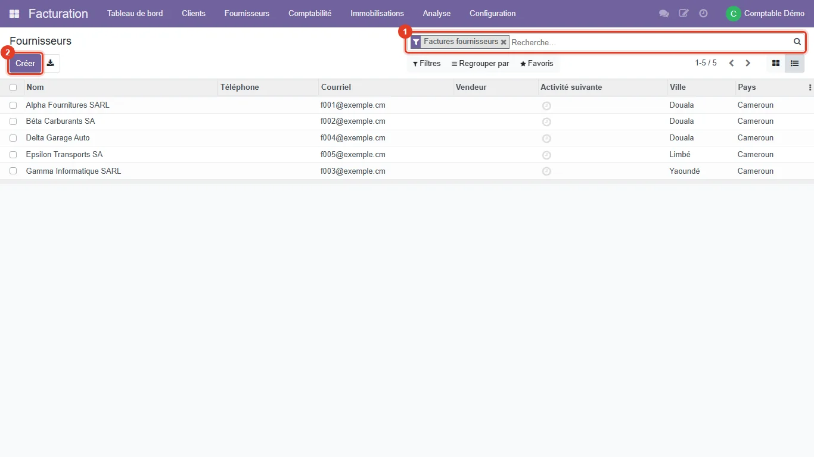

Objectif. Garder un fichier de tiers propre.
Où dans Odoo 15Facturation › Fournisseurs › Fournisseurs (vue liste)

Ce que vous faites
- Passez en vue liste et recherchez (1) par nom ou par NIU.
- Tapez le NIU dans la recherche : deux fiches pour un même NIU signalent un doublon.
- En cas de doublon, archivez la fiche inutilisée (leçon 1.3).
- Créez (2) seulement si la recherche ne donne rien.
À vérifier avant de continuer
0 / 1À éviter.
- Ne fusionnez pas des tiers qui ont des écritures sans l'accord du responsable.
Exercice sur la base de test
Recherchez un fournisseur par son NIU.